Bee 747 Apiaries · Fisherville, Kentucky
A small apiary in Fisherville, on the east edge of Louisville, worked by hand and watched by sensors. Raw, unfiltered honey for the household, and a live readout from the hives, ten minutes at a time.
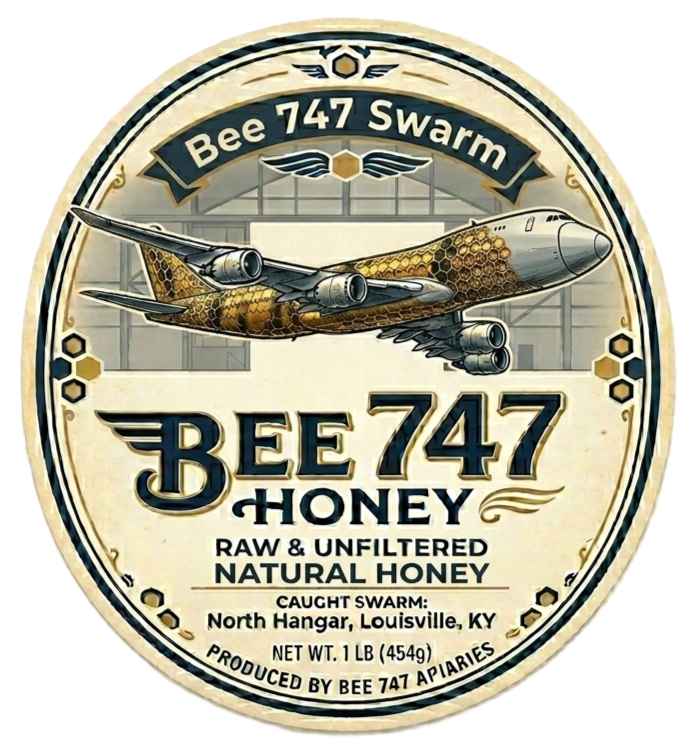
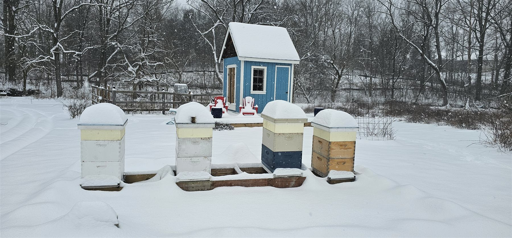
Four colonies stand in a field that runs to goldenrod and ironweed by late summer. Each hive sits on a load cell, carries a temperature and humidity sensor inside the box, and wears a small solar panel on the lid. The bees don't notice. The sensors report anyway, every ten minutes, to a receiver at the house.
The rest of the place belongs to whatever shows up: deer at the edge of the yard, monarchs on the milkweed, a hummingbird moth in the honeysuckle, and the occasional swarm looking for a new home.
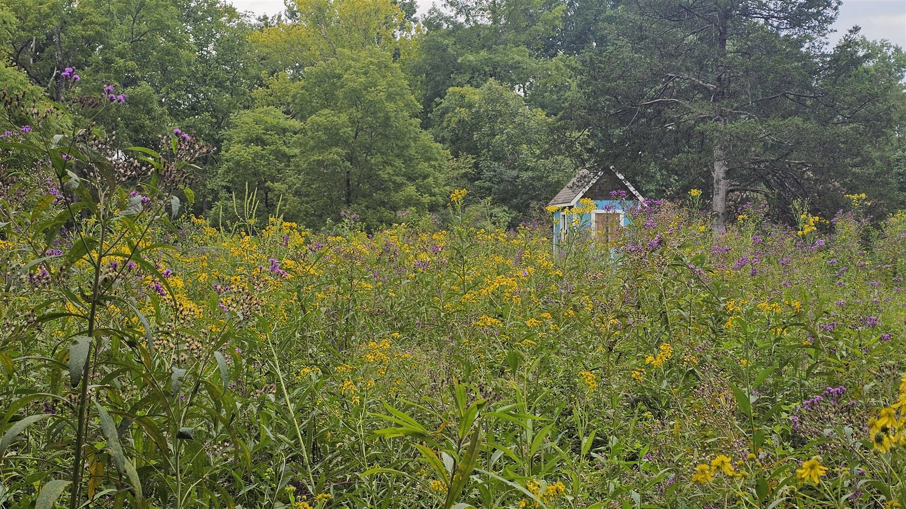
The honey tastes like the calendar. These are the blooms the bees were on when each photo was taken, in the order the season delivers them.
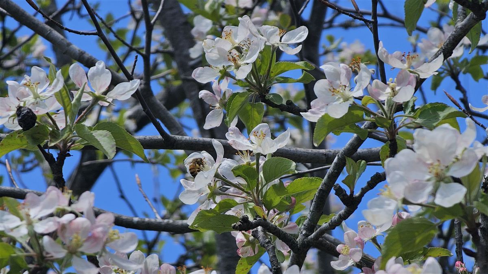
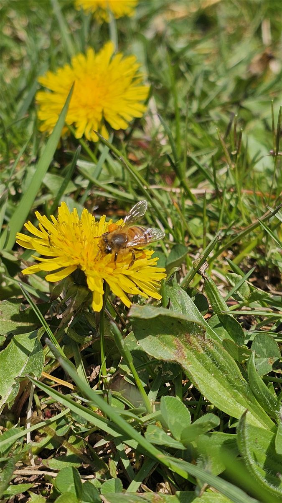
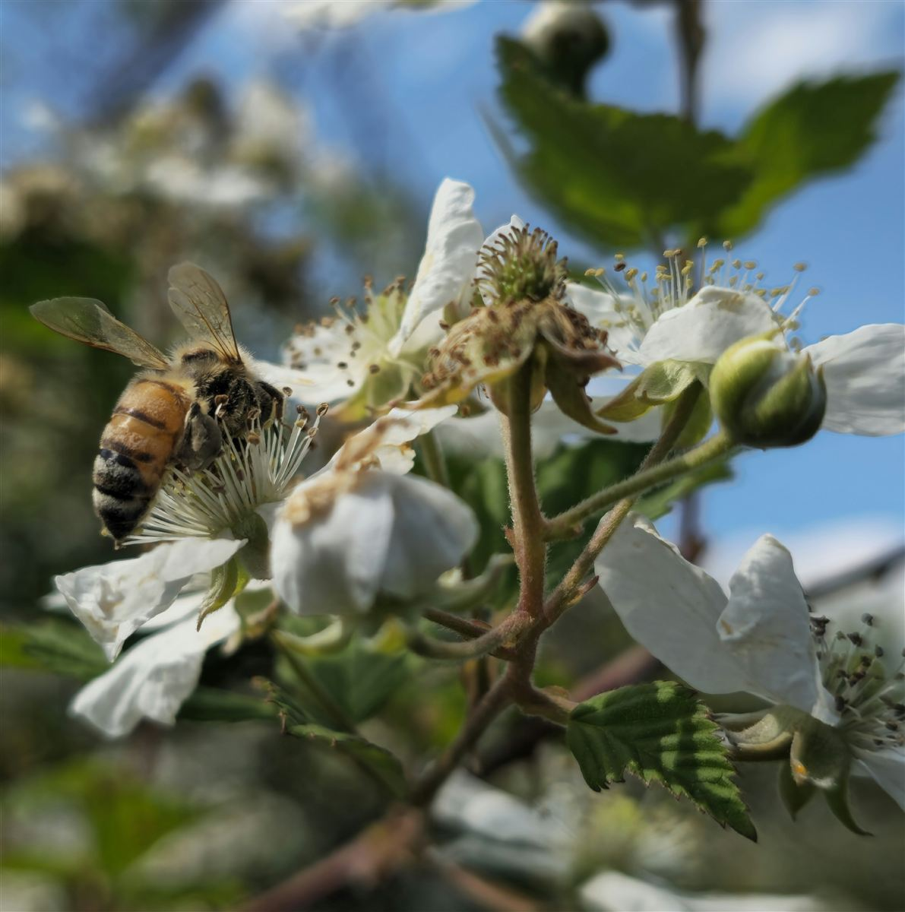
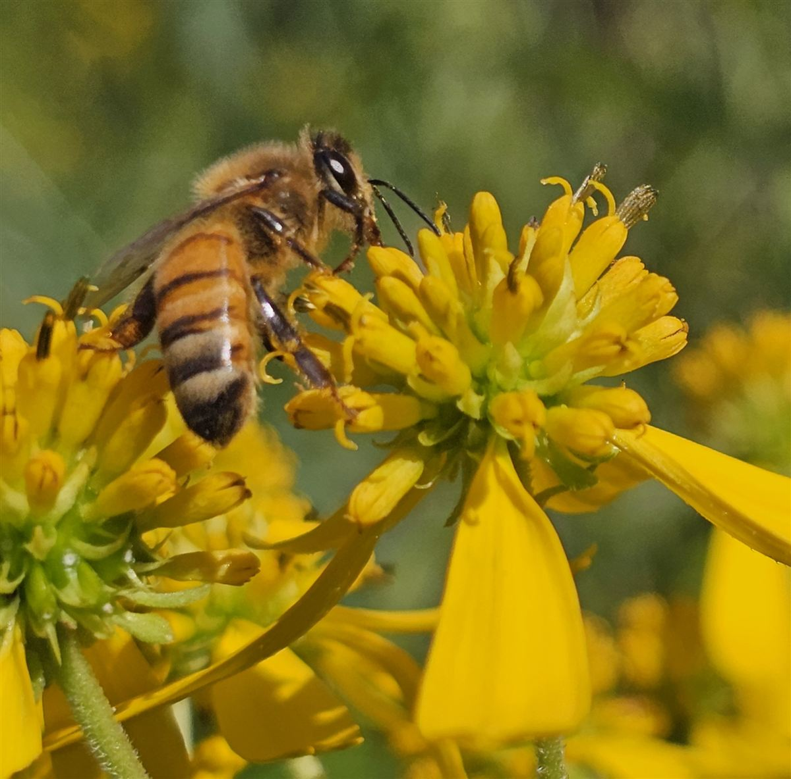
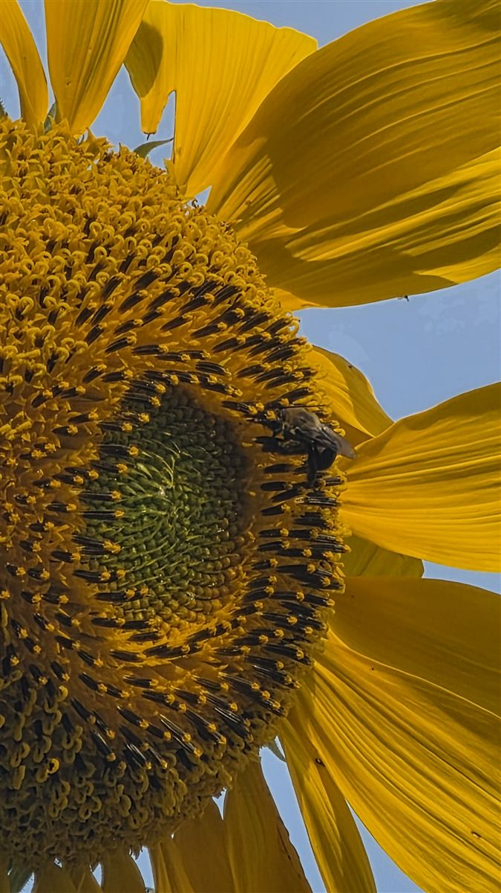
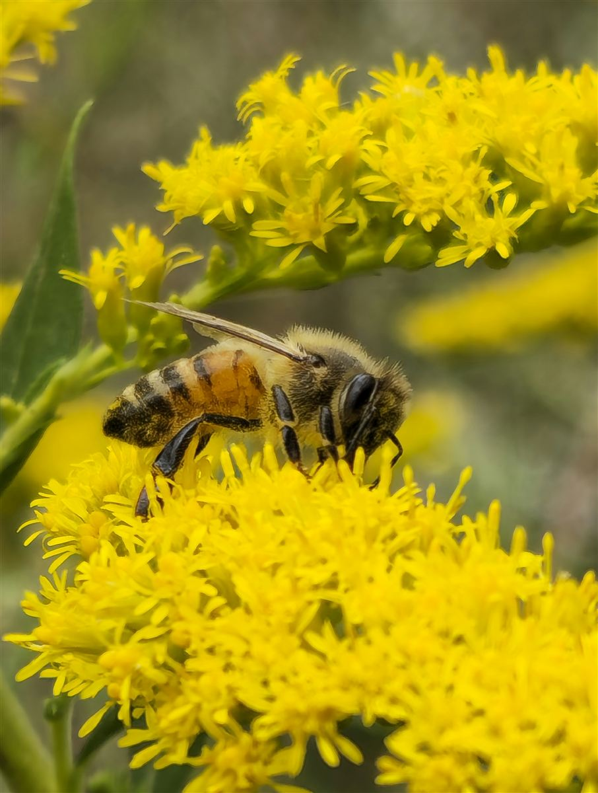
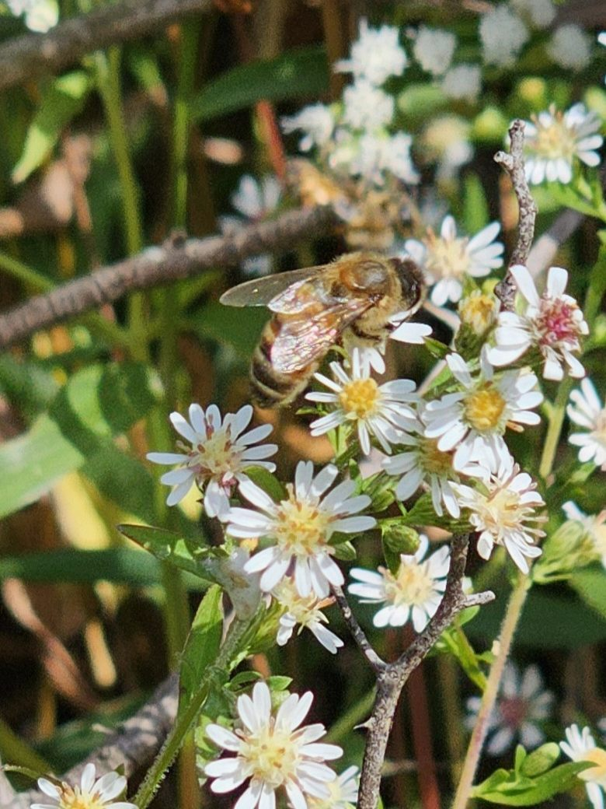
The name comes from the swarm that started it. It was caught at the North Hangar in Louisville, boxed, and brought home to the apiary, where it has been paying rent in honey ever since. The 747 on the label is the same story told in honeycomb livery.
Nothing is heated and nothing is filtered finer than a coarse strain to catch the wax. What ends up in the jar is whatever the field was blooming that month, pollen and all, so no two harvests taste quite the same.
The honey isn't for sale yet. Questions about the ladies, the hives, or the sensors are welcome at hello@bee747.com.
One per hive. Sleeps almost all the time, wakes every ten minutes, reads the sensors, and sends a 25-byte packet by radio.
An ESP32 at the house. Receives the packets, checks that each one is the size and version it expects, and hands them over USB serial.
The brain. Logs every reading to CSV, keeps the clock, converts units, and decides what the screens should show.
A 7-inch display on the mantle gets the data back by radio. A phone app and this page get it from the cloud.
A fifth node, GardenWX, sits in the best radio spot in the field and reports outdoor temperature, humidity, and barometric pressure, so a weight change can be checked against the weather before it gets blamed on the bees.
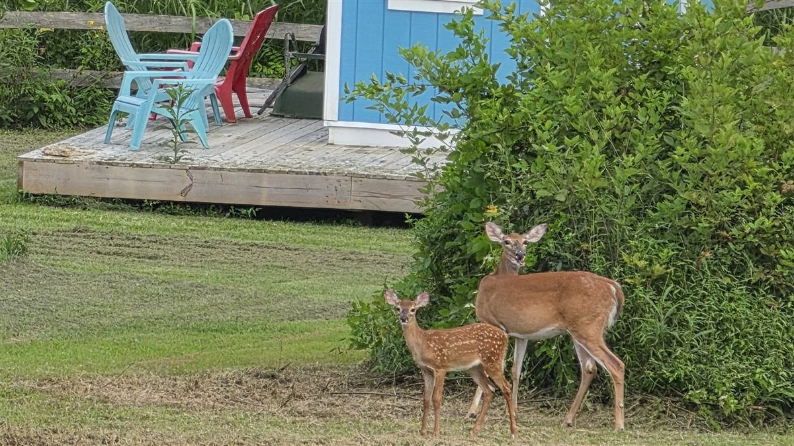
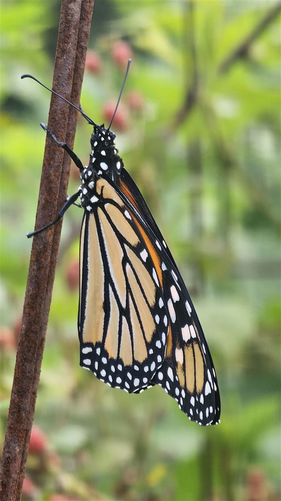
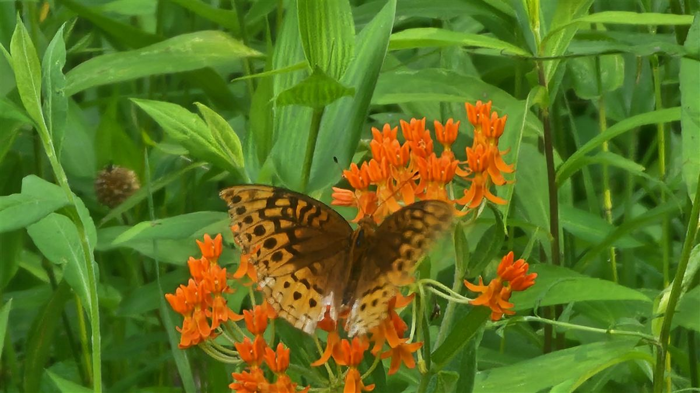
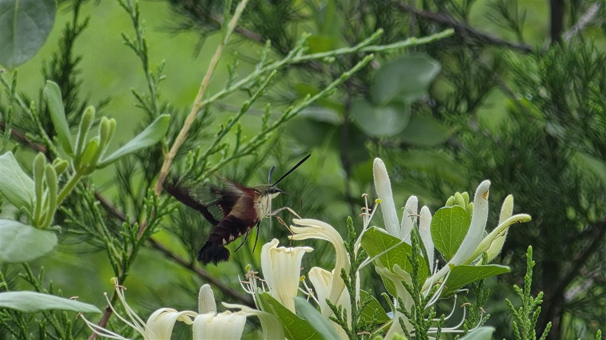
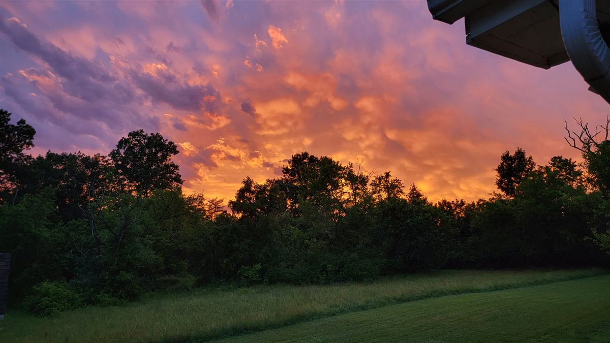
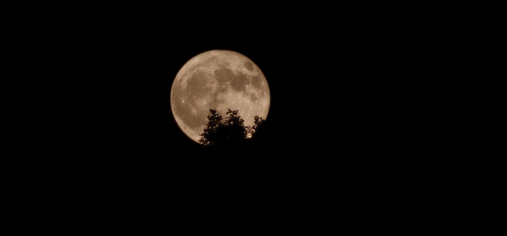